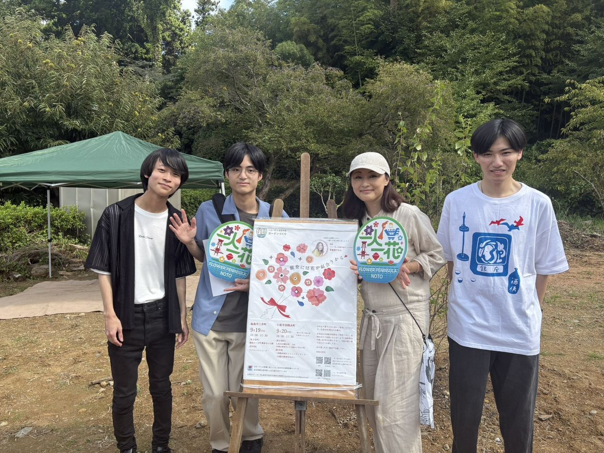
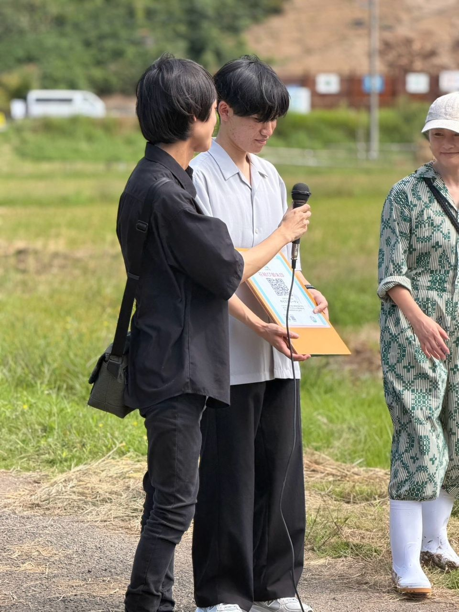
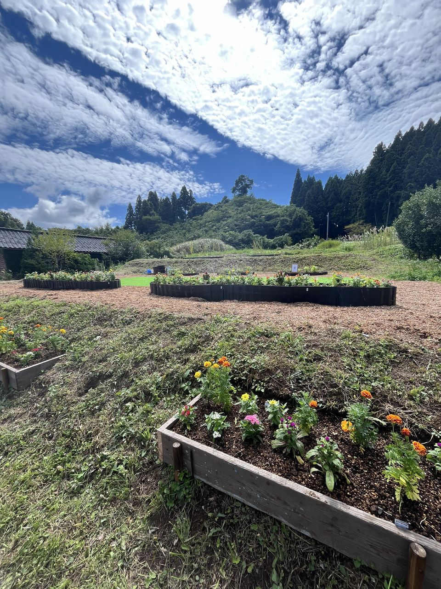
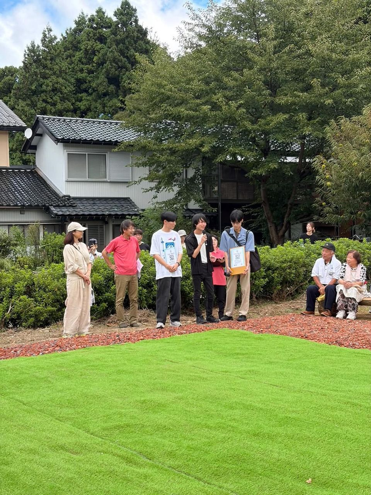
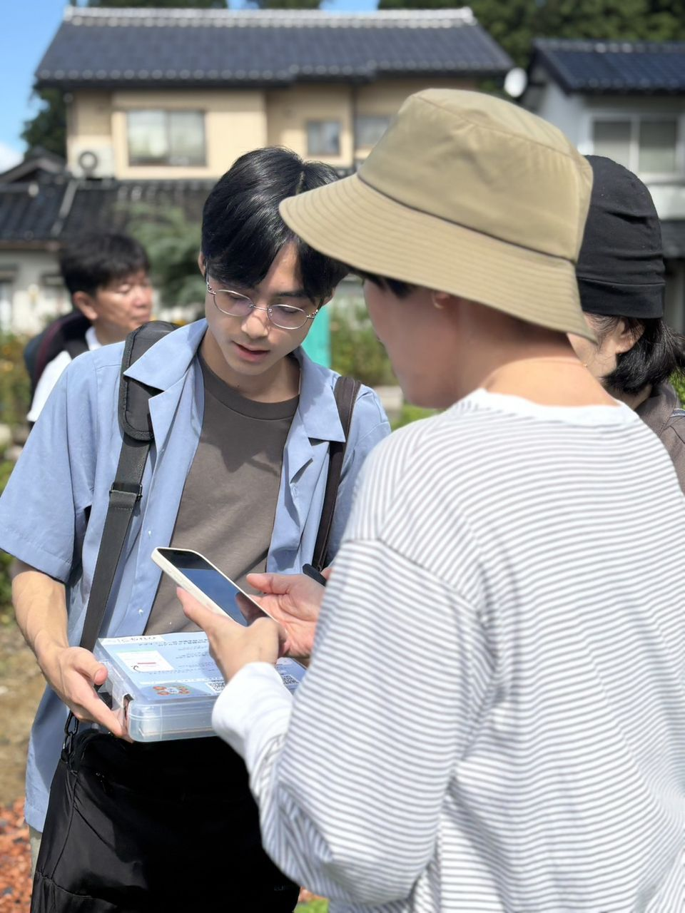

2026年9月19日・20日に開催された「一人一花 in 能登半島」プロジェクトのコミュニティガーデンづくりイベントに参加しました。
輪島市三井町、七尾市田鶴浜町の計2会場で、こもれびが開発したアプリ「一人一花 交換手帖 in 能登半島」のご説明と初回登録のサポートを行いました。
活動報告
一人一花 in 能登半島のガーデンづくりイベントに参加しました。

今回のイベントでは、実際にアプリを利用してくださっている方と直接お会いすることができました。多くの花結び御朱印を集めてくださっている方や、「今日のガーデン」を投稿してくださっている方もおり、実際にアプリを楽しんでいただけていることを実感しました。
「御朱印を集めることが楽しい」といったお声も伺い、ガーデンを巡るきっかけの一助となっていることを嬉しく思います。


また、予想以上に多くの方に新規登録していただいたことも印象に残っています。多くの方から直接ご意見を伺うこともできたため、今回いただいた声を今後のアプリの改善に活かし、より多くの方に楽しんでいただけるサービスを目指していきます。

